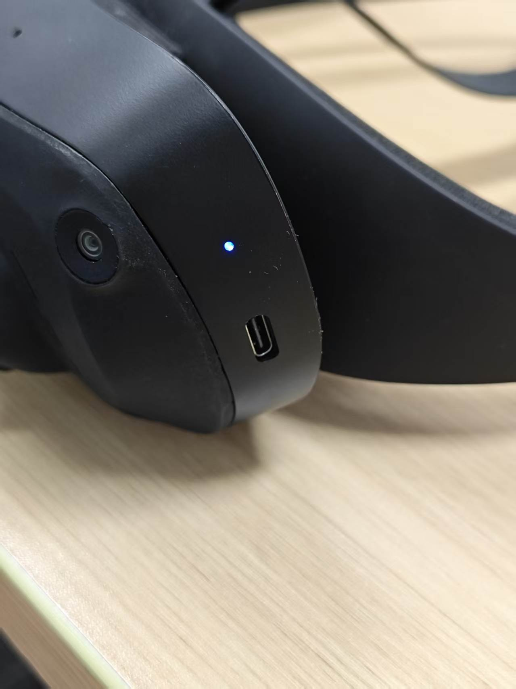
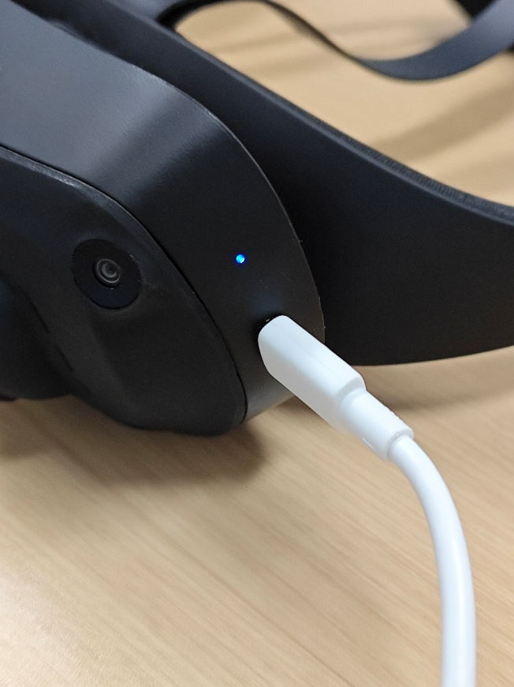
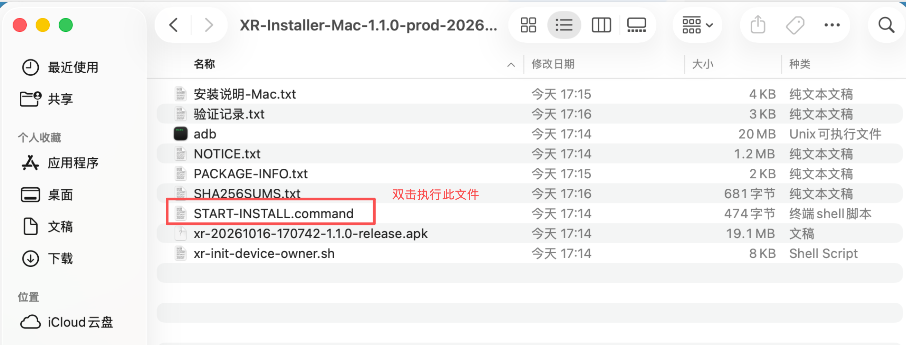

安装操作 / MAC
用 Mac，
给头环安装 App。
第一次操作也可以跟着做。准备好头环和数据线，
按下面 6 步完成安装与初始化。
App 安装到头环。Mac 负责运行安装工具；安装和 init 初始化会一起完成。
开始前
先解压，文件放在一起
向负责人取得 Mac 版安装工具 ZIP。在“访达”中找到它，双击 ZIP 解压，再打开解压后的文件夹。
XR-Installer-Mac-1.1.0-prod-20261016-170742.zip如果你已经看到下方截图那样的文件列表，就已经解压，可以继续下一步。
一台 Mac
工具包已自带 ADB
已开机的头环
建议先保证电量充足
可传输数据的 USB 线
仅充电的数据线无法安装
保留文件夹内全部文件。只双击后面指定的安装入口，不用单独打开 APK、adb 或 init 文件。
连接设备
用 USB 线连接 Mac 和头环
- 在头环上打开开发者选项 → USB 调试。不同固件的入口可能不同，找不到时联系设备负责人。
- 用 USB 数据线连接 Mac，一次只连接一台待安装头环。
- 查看头环画面。如果出现“允许 USB 调试”，选择允许 / 确定。


授权弹窗有时会在运行安装工具后才出现。若工具提示没有已授权设备，先在头环上允许，再重新打开安装入口。
打开工具
双击这个文件
START-INSTALL.command只需要打开它在解压后的文件夹里找到它，双击打开。正常情况下，会出现一个显示文字的“终端”窗口。

这个入口会自动运行 xr-init-device-owner.sh。
按下一步在系统设置中允许打开。
第一次使用时可能遇到
被拦截？到系统设置里允许
如果显示“无法验证开发者”或“Apple 无法检查是否包含恶意软件”，先核对这是负责人提供的工具包，再按下面的顺序操作。没有弹窗、工具能正常运行时，直接跳到第 5 步。


安装脚本和 adb 是两个文件，可能分别弹窗。对本工具包里的 adb 重复上面的放行步骤。若原终端已显示失败，关闭失败窗口，再双击 START-INSTALL.command 重新运行。
这里仅允许本次工具运行，无需关闭系统安全保护。如果提示文件“已损坏”“将损坏你的电脑”，或公司电脑不允许修改设置，请停止并联系负责人。
终端操作
输入编号，再按提示确认
终端会显示可用设备。每次输入后，都按一下键盘上的回车键（Enter / Return）。
[1] 你的头环序列号 输入目标头环编号：1 ← 按回车 确认使用这台头环？[Y/N]：Y 确认覆盖安装此 APK？[Y/N]：Y 将 XR App 设置为设备所有者？[Y/N]：Y
- 选设备：输入列表里目标头环前面的编号。只有一台时通常输入 1。
- 确认设备：核对序列号、厂家和型号后，输入 Y。
- 确认安装：确认使用本次正式包后，输入 Y，等待安装。
- 首次初始化：若提示设置设备所有者，确认是本项目管理的头环后输入 Y。已设置过的会跳过。
“设备所有者”是本项目设备管理所需的初始化设置。第一次通常需要确认；后续同签名覆盖升级会保留这一身份。
完成检查
看到成功提示，再看一眼头环
终端应出现
XR INIT SUCCESSAPK 安装和设备所有者核验完成，启动命令已发送。- 看一下头环画面，确认 XR 采集 App 已打开。
- 回到 Mac，按回车结束安装窗口。
- 随后按项目要求进行配网、绑定、登录、录制与上传验证。
USB 安装本身不需要联网。后续业务使用还需要配套手机控制 App、正式账号和可访问服务器的 Wi-Fi。
卡住时看这里
常见问题
“仍要打开”找不到在哪里？
先重新双击一次安装入口，让系统产生刚才那条拦截记录，再打开“系统设置 → 隐私与安全性”，向下滚动查看“安全性”区域。如果工具已正常运行，就不需要放行；如果这是公司管控的 Mac，请联系 IT 或负责人。
提示“没有已授权设备”，怎么办？
查看头环是否有 USB 调试授权弹窗，点允许；确认 USB 调试已开启，数据线能传数据，然后重新运行入口。可换一个 USB 接口或数据线再试。
要不要再双击 xr-init-device-owner.sh？
不用。START-INSTALL.command 会自动调用 init 脚本，安装与初始化在同一次流程里完成。
出现 XR INIT FAILED，怎么办？
先保留终端窗口，截图最后的具体错误给负责人。失败可能发生在 APK 已安装之后，不代表已自动回滚。先不要卸载旧 App、清除数据或恢复出厂。日志位于 Mac 的 ~/Library/Logs/XR-Installer/；需要时由负责人协助取出。
提示签名不兼容、版本更高或已有其他设备所有者？
停止操作，将错误信息交给负责人。本工具遇到这些情况会停止，不会自动卸载旧应用或强制降级。
头环没有“开发者选项”或设置设备所有者失败？
不同固件的开放方式可能不同，请联系设备负责人；首次设置设备所有者还会受到系统账户、工作资料和固件策略限制。不要自行恢复出厂。